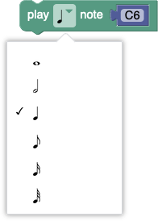
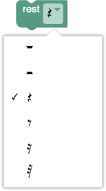

The glockenspiel has 25 notes, just over two octaves. Here are the available notes and their standard numeric MIDI values:
| A5 | 81 |
| A♯5/B♭5 | 82 |
| B5 | 83 |
| C6 | 84 |
| C♯6/D♭6 | 85 |
| D6 | 86 |
| D♯6/E♭6 | 87 |
| E6 | 88 |
| F6 | 89 |
| F♯6/G♭6 | 90 |
| G6 | 91 |
| G♯6/A♭6 | 92 |
| A6 | 93 |
| A♯6/B♭6 | 94 |
| B6 | 95 |
| C7 | 96 |
| C♯7/D♭7 | 97 |
| D7 | 98 |
| D♯7/E♭7 | 99 |
| E7 | 100 |
| F7 | 101 |
| F♯7/G♭7 | 102 |
| G7 | 103 |
| G♯7/A♭7 | 104 |
| A7 | 105 |
There are three different ways to compose music for the glockenspiel:
There are five options for the length of each note. From top to bottom, they are whole notes, half notes, quarter notes (the default), eighth notes, and sixteenth notes. Thirty-second notes are not available in Blockly, only in JavaScript.

A note's pitch can be changed by either typing its name ('A5' - 'A7') or by choosing the note value on a staff. Note that this UI only allows for the selection of the 15 natural pitches (not sharps or flats).
Alternatively, the pitch block can be replaced by a number block which specifies MIDI value (81-105) of the pitch. The following example shows two quarter notes of the same pitch being played back to back.
In order to play a sharp or flat pitch, one can increment or decrement a pitch block, or specify the pitch's MIDI value directly. The following example shows three C♯6 or D♭6 quarter notes played in a row.
A pause in the music is called a rest. Rests come in the same lengths as notes. From top to bottom, they are whole rests, half rests, quarter rests (the default), eighth rests, and sixteenth rests.

Use a "when ▶ clicked" event handler to start code executing. One can create up to four of these handlers, allowing for multiple simultaneous threads. Below is a two-threaded program that plays the same four-note tune as a round.

Any program built with Blockly can be viewed in its JavaScript form. However, once one edits the JavaScript, it is not possible to go back to Blockly, except by either deleting the entire program or reloading the page.
It is recommended that a program start with this definition of the following twenty-five global variables for note pitches:
var A5=81, Bb5=82, B5=83, C6=84, Db6=85, D6=86, Eb6=87, E6=88, F6=89, Gb6=90, G6=91, Ab6=92, A6=93,
Bb6=94, B6=95, C7=96, Db7=97, D7=98, Eb7=99, E7=100, F7=101, Gb7=102, G7=103, Ab7=104, A7=105;
The API is made up of three functions:
play(length, pitch) - Plays a note
of the specified length and pitch. Length is intended to be 1, 1/2, 1/4, 1/8, 1/16,
or 1/32. Shorter lengths are an error and will be dropped. Longer lengths will be
represented as a whole note, followed by the appropriate length of rests.
Lengths not a multiple of 1/32 will be rounded down. Pitch is a MIDI
integer from 81 through 105, or one of the pre-defined convenience variables
A5 through A7.
rest(length) - Pauses the music for the specified length.
Rests may have the same lengths as notes.
runThread(func) - The provided function
will be run in a new concurrently executing thread. There may be up to
eight running threads, though only four will shown on the scrolling
visualization. Below is a two-threaded program that plays the same four-note
tune as a round (identical to the example in the Blockly API section above).
var A5=81, Bb5=82, B5=83, C6=84, Db6=85, D6=86, Eb6=87, E6=88, F6=89, Gb6=90, G6=91, Ab6=92, A6=93,
Bb6=94, B6=95, C7=96, Db7=97, D7=98, Eb7=99, E7=100, F7=101, Gb7=102, G7=103, Ab7=104, A7=105;
runThread(start1);
runThread(start2);
function start1() {
tune();
}
function start2() {
rest(1/2);
tune();
}
function tune() {
play(1/4, C6);
play(1/4, E6);
play(1/4, G6);
play(1/4, C7);
}
The Blockly and JavaScript client-side editors generate a transcript of the tune, then transmit it to the glockenspiel to perform. It is possible to generate and transmit a transcript without the help of the editors.
The data format of the transcript is JSON. Below is the transcript of a four-note tune played in two voices as a round (identical to the examples in the Blockly API and JavaScript API sections above).
{
tempo: 375,
voices: [
[[84, 0.25], [88, 0.25], [91, 0.25], [96, 0.25]],
[[-1, 0.5], [84, 0.25], [88, 0.25], [91, 0.25], [96, 0.25]]
]
}
tempo specifies the number of milliseconds
a 1/4 note would play. The range is restricted from 125 to 625, and
defaults to 375 if not specified.
voices specifies an array of voices. Each voice
is an array of tuples. Each tuple contains a MIDI pitch value (81 through 105,
or -1 for a rest), and by a duration (1/32 through 256).
Open an HTTP connection to https://glockenspiel.appspot.com/submit
and send a POST request with a property named data
containing the transcript.
A full working example in Python is this script which plays the Westminster Quarters based on the current time.